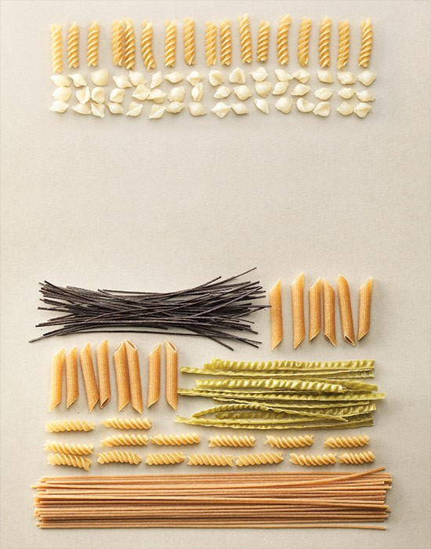

하얀 밀가루와 이별하다

통밀을 사용한 파스타부터
검정콩, 현미, 퀴노아까지.슈퍼 푸드로 만든
건강한 파스타를 소개합니다.
나에게 맞는 파스타를 취향별로 선택해보세요.
종류
특징 퀴노아, 아마란스, 현미, 옥수수로 만든 글루텐 프리 파스타. 단백질 함량이 많은 반면 콜레스테롤은 전혀 없다.
맛 부드러운 식감이 돋보이는 파스타. 일반 파스타와 맛이 가장 유사하다.
종류 푸실리, 펜네, 스파게티
중량 227g
가격 12,000원 대
특징 100% 우리 쌀로 만든 쌀 파스타. 국내 유일 순수 자체 기술로 개발했다. 재료, 생산 시설, 조리 공정 등을 엄격하게 심사한 후 발급되는 코셔 마크를 획득했다.
맛 쫄깃하고 단단한 식감. 덜 익었다고 느껴질 수 있으니 15분 정도 푹 삶는 것을 추천한다.
종류 펜네, 마카로니, 쉘
중량 350g
가격 5,000원 대
특징 노화 방지 성분이 많고, 성인병 예방과 다이어트에 효과적인 유기농 검은콩으로 만든 스파게티. 일반 파스타보다 짧고 가늘다.
맛 검은콩 향이 강하다. 메밀면과 비슷한 독특한 식감으로 조리 시간이 짧다.
종류 스파게티
중량 199g
가격 5,600원 대
특징 경남 고성에서 재배한 국내산 현미가 98.5% 함유된 파스타. 국내에서 직접 개발한 파스타 전용 쌀(새미면)을 사용한 것이 특징이다.
맛 현미로 만들어 떡처럼 쫀득한 식감이다.
종류 펜네
중량 350g
가격 5,000원 대
특징 1인분에 24g의 단백질과 11g의 식이섬유가 들어있는 건강 파스타. 아다마메(삶거나 구운 풋콩)와 녹두로 만들어 부드러운 질감과 고소함이 특징.
맛 콩 향이 강하게 나며 부드럽다. 익히면 부피가 많이 늘어나는 편.
종류 페투치네
중량 198g
가격 4,900원 대
특징 표면이 거칠어 양념이 잘 묻으며, 조리 후에도 모양과 탄력성이 잘 유지되는 프리미엄 제품. 단백질, 비타민 함유 단백질 함량이 많은 반면 콜레스테롤은 전혀 없다.
맛 거친 밀의 질감이 약간 퍽퍽하게 느껴진다. 담백하고 고소한 맛.
종류 푸실리, 펜네, 스파게티
중량 500g
가격 4,000원 대